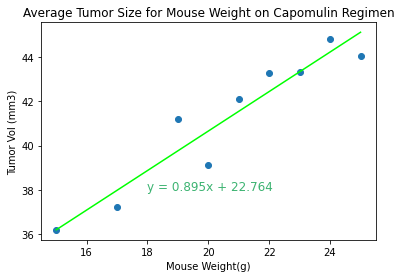

Average Tumor Size Per Mouse Weight: Capomulin

There appears to be a strong positive correlation (correlation coefficient: ~0.95) between average tumor volume and mouse weight in the Capomulin regimen: as mouse weight increases, the tumor's weight also increases. One might think that tumors generally take up the same proportion of an animal's body, so it would make sense for the tumor volume to rise along with the mouse weight.
However, since what is being graphed is average tumor volume per weight class, the data points (at least 170) have been grouped, leaving only 9 points to graph. This small amount of data points leaves the data set vulnerable to being skewed by outliers, and which would require a larger data set to be collected in order to make this strong correlation more certain.